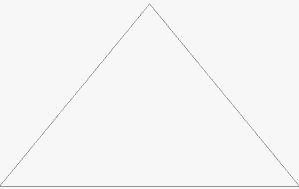
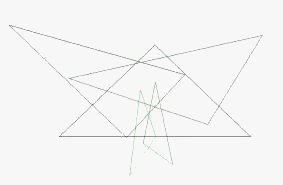
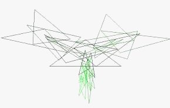
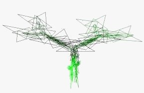
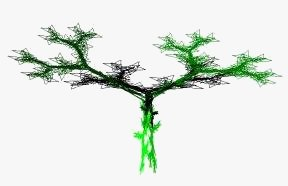

Beispiel der Eiche, erzeugt mit deterministischem Prozess
Bild 1 bis Bild 6 zeigen die Entwicklung der Eiche vom Ausgangsdreieck, auf das immer wieder die gleichen 5 affinen
Abbildungen angewendet werden:
Bild 6 (Stufe 6) besteht also bereits aus 5^(6-1) = 5^5 = 3125 Dreiecken.





